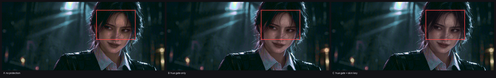
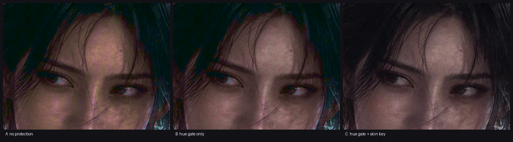

膚色 v4 — 量測報告
Look Direction v13 · plate = shot_17.jpg（1500×636）· look = 王家衛（融合 70%）·
膚色 key = 手動框 [58%,12% → 82%,55%] · 量測喺瀏覽器內以 CIELAB／ICtCp 直接計，唔係目測
面盒 ΔE00（無保護 → 有 key）
4.58 → 0.43
10.6× 改善
背景 ΔE00（look 有冇落到）
8.19 → 8.04
保留 98.2%
vectorscope flesh Δθ
−8.89° → −0.05°
幾乎貼返 flesh line
48 幀 Δhue std（煲）
4.11° → 0.00°
key 完全消除幀間抖動
1 · 面盒（in-key）— 數字
| 指標 | A 無保護 | B 淨 hue gate | C gate + key | 判讀 |
|---|
| ΔE00 mean | 4.58 | 2.45 | 0.43 | <1 = 肉眼分唔出 |
| ΔE00 p95 | 6.83 | 5.08 | 1.18 | 最差嗰 5% 像素都無事 |
| ΔE_ITP（BT.2124） | 4.40 | 2.52 | 0.32 | ITU 建議 1 ΔE_ITP ≈ JND |
| Δhue | +20.31° | +10.89° | −0.12° | 色相萎實守得住 |
| chroma ratio | 1.16 | 1.09 | 0.98 | 無過火、無塌 chroma |
| vectorscope Δθ | −8.89° | −4.24° | −0.05° | 儀器上 flesh line 無偏移 |
2 · 背景（key 以外）— 證明個 look 仲喺度
| 指標 | A 無保護 | B gate | C gate + key | 判讀 |
|---|
| ΔE00 mean | 8.19 | 8.00 | 8.04 | 98.2% 嘅 look 照落 |
| ΔE_ITP | 4.57 | 4.34 | 4.27 | 背景改動量無被食走 |
| Δhue | −59° | −64° | −66° | 藍→青綠嘅轉向照做 |
呢個係成個設計嘅重點：保護唔可以靠「成張圖唔好郁」。
C 欄背景 ΔE00 8.04 vs A 欄 8.19 —— 背景照樣變，淨係 key 入面嗰浸皮膚守返原色。
3 · 48 幀煲（boil）測試 — GoT 真片
| 模式 | 幀數 | Δhue 平均 | Δhue std | Δhue range | Cratio std |
|---|
| 無保護 | 48 | −9.28° | 4.11° | 11.74° | 0.130 |
| 淨 hue gate（逐像素判定） | 48 | −3.83° | 2.92° | 9.03° | 0.089 |
| hue gate + explicit key | 48 | 0.00° | 0.00° | 0.00° | 0.000 |
導演投訴嘅「一撻撻／noise」就係呢個 std：逐像素判定會隨雜訊跳，幀與幀之間忽大忽小。
explicit key 係空間遮罩，唔睇單粒 pixel 嘅顏色 → 結構上唔會煲。
4 · LUT 結構驗收（33³ 同 65³）
| 項目 | 33³ | 65³ | 合格線 | 結果 |
|---|
| 中性軸殘餘 chroma | 1.8e−05 | 1.8e−05 | < 0.5 | PASS |
| L 單調（有冇反轉） | 無反轉 | 無反轉 | min step > 0 | PASS |
| 相鄰格最大跳 /255 | 114 | 68 | 越小越好 | 陡（look 本身好重） |
| LUT vs 直接計：ΔRGB mean /255 | 3.13 | 0.66 | < 1 | 65³ PASS |
| LUT vs 直接計：ΔRGB p99 /255 | 19.2 | 2.26 | < 3 | 65³ PASS |
交付建議：出 LUT 用 65³。33³ 係 Resolve/Nuke 預設，但呢個 look 太重，
33³ 嘅 p99 誤差去到 19/255（會喺陡位見到帶狀）；65³ 壓到 2.26/255。
另外：skin key 同色度降噪係空間運算，物理上入唔到 3D LUT —— LUT 淨載 look，key 要喺 grade 入面落。
.cube 檔頭已經寫咗呢句 note。
5 · 過程中撞到、並且改好嘅三個數學錯
- hue 目標表用角度線性插值 → 插出垃圾。
palette 由 L25(a−10.2,b+5.0) 插值去 L55(a−26,b−8.9) 途中會掠過中性軸，
目標色相喺 ±180° 附近。實測 L=35.79 讀到 83.4°、L=36.04 讀到 −144.4°（差 0.25 L 跳 132°）。
改：LUT 存 Cartesian 目標向量，用嗰陣先 atan2。
- 「旋向目標色相」喺對極有分支切。
任何「圓 → 旋轉量」嘅連續奇映射都一定要喺對極為 0
（Δh(180) = −Δh(−180) = −Δh(180) ⇒ Δh(180)=0）。
實測 33³ LUT 嗰度出現 168/255 硬跳（會 tearing）。
改：Δh = K·sin(Δ)，係最簡單而且 C¹ 連續嘅解。
- 低 chroma 像素嘅方向跟咗「來源 hue」，而嗰個方向喺中性軸上未定義。
C' = C + s(Ct−C) 即係 C→0 嗰陣 chroma 會被抬去 s·Ct（約 20），
方向如果仲用嚟源 hue，跨過中性軸就成個輸出翻轉。
改：w = smoothstep(0, 7, C)，低 chroma 嗰陣方向收去目標色相。
改完呢三樣：LUT 相鄰格最大跳 168 → 68/255；LUT vs 直接計 p99 由 42 → 2.26/255。
6 · 視覺對照
左→右：A 無保護 / B 淨 hue gate / C gate + key。紅框 = skin key 範圍。


7 · 交付物
| 檔案 | 內容 |
|---|
index.html | v13：L 索引目標表 + sin hue gather + 記憶色鉗 polarClamp + chroma prewash + 拖框／自動框 key |
look_v4_wkw_33.cube | 33³ LUT（預設大小） |
look_v4_wkw_65.cube | 65³ LUT（建議交付用） |
v4_compare_full.png / v4_compare_face.png | A/B/C 三種對照 |
skinlab/look_v5.py | JS 變換嘅 Python 對照實現（交叉驗證 + 煲測試用） |
skinlab/validate_cube.py | LUT 結構驗收 |
8 · 用家操作（app 入面）
- 【方向預覽 DIRECTIONS】→ 揀導演 → 落 look
- 【拖框 key】：喺預覽圖拖一個框框住塊面（自動框只係起步點，實測會框錯背景）
- 【保護膚色】checkbox + 【膚保】桿（100% = 色相彩度完全還原，淨留 tonal 變化）
- 【色度降噪】：grade 之前嘅 L 導引邊緣保留平滑，專消逐像素判定整出嚟嘅斑點
- 【融合】桿 = look 力度（0% = 原圖）
已知限制：key 係靜態矩形，無追蹤。搖鏡／演員行開要重新框，或者分段框。
真正的做法係 loaded matte（Baselight/Resolve 嘅 tracker），要落去就要接追踪器。